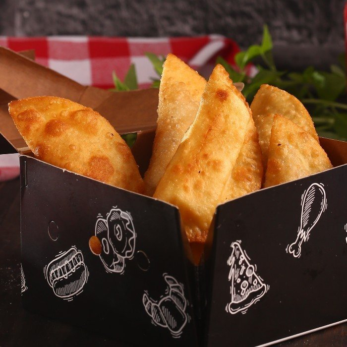
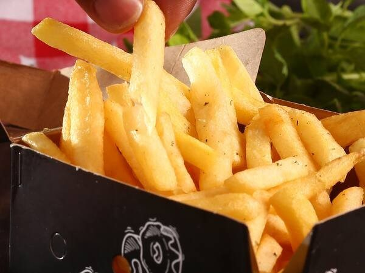

Início · Calzones e porções
Calzones, porções e bebidas
Calzone grande de 8 fatias em sete recheios, pastel em porção de 6, batata frita e as bebidas para acompanhar.
Oliks PizzariaDelivery e retirada · R. 19 de Maio, Brotas
Calzone grande
Sete recheios, 8 fatias
CalabresaMolho, mussarela, calabresa, cebola e orégano.R$ 52,00
Calabresa com CatupiryMolho, mussarela, calabresa, catupiry e orégano.R$ 62,00
Frango com CatupiryMolho, mussarela, frango, catupiry e orégano.R$ 62,00
PortuguesaMolho, mussarela, presunto, ovos, azeitona, cebola e orégano.R$ 67,00
NordestinaMolho, mussarela, carne seca, banana frita, catupiry, cebola e orégano.R$ 68,00
RomanescaMolho, mussarela, presunto, bacon, azeitona, catupiry e orégano.R$ 68,00
PraianaMolho, mussarela, camarão, catupiry, alho-poró, pimenta biquinho e orégano.R$ 86,00
Também em combo com Coca-Cola 1 litro: calabresa com catupiry ou frango com catupiry, R$ 76.
Porções
Pastel e batata


- Batata Frita · Porção. R$ 15,00
- Pastel de Frango · Porção com 6 unidades. R$ 13,50
- Pastel de Frango com Catupiry · Porção com 6 unidades. R$ 13,50
- Pastel de Mussarela · Porção com 6 unidades. R$ 13,50
- Pastel Oliks · Porção com 6 unidades: mussarela, calabresa e catupiry. R$ 13,50
Bebidas
Refri, água, energético, cerveja e vinho
- Coca-Cola lata 350 ml · R$ 5,00
- Coca-Cola Zero lata 350 ml · R$ 5,00
- Fanta Laranja lata 350 ml · R$ 5,00
- Pepsi lata 350 ml · R$ 5,00
- Guaraná Antarctica lata 350 ml · R$ 5,00
- Coca-Cola 1 litro · R$ 10,00
- Pepsi 1 litro · R$ 8,00
- Guaraná Antarctica 1 litro · R$ 8,00
- Pepsi Black Zero 1 litro · R$ 8,00
- Guaraná Antarctica 2 litros · R$ 13,00
- Coca-Cola 2 litros · R$ 15,00
- Água 500 ml · R$ 2,00
- Red Bull 250 ml · R$ 12,00
- Itaipava lata · R$ 4,00 · Para maiores de 18 anos.
- Amstel lata · R$ 5,00 · Para maiores de 18 anos.
- Heineken long neck 330 ml · R$ 9,50 · Para maiores de 18 anos.
- Vinho Pergola Tinto Suave 1 l · R$ 38,00 · Para maiores de 18 anos.
Pedir
Tudo isso entra na mesma sacola
No pedido do site, calzones, porções e bebidas ficam nas abas do cardápio, junto com as pizzas.
Pedir calzoneDúvidas frequentes
Perguntas comuns
O calzone serve quantas pessoas?
O calzone grande vem em 8 fatias, como a pizza Grande.
Tem bebida alcoólica?
Sim, cerveja e vinho, vendidos para maiores de 18 anos.
Bateu a fome?
Pediu, chegou, matou a fome.
De quarta a segunda, a partir das 17h30. Monte o pedido no site ou chame direto no WhatsApp da casa.